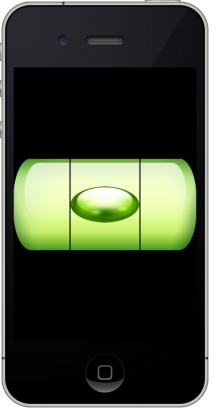

One great feature of our Wormhole JavaScript Library is its ability to retrieve data from the device's sensors using just standard JavaScript code and HTML5 markup. In this tutorial we will show you a simple sensor-driven app that makes use of the HTML5 <canvas> tag.
The project for the whole app is available as a zipped attachment at the foot of this page. You can load the project and build and run it in MoSync Reload or in the MoSync SDK.
Our app is a spirit level simulator that uses the accelerometer to measure the angles of the device relative the gravitational vector. We will first highlight some interesting aspects of the app, then we will show you the code from the main file. The code is heavily commented so that you can see what is happening at each step.
What do we need to simulate a spirit level? Well obviously we need a way to measure the orientation (tilt) of the device. For that we are going to use its accelerometer. The Wormhole JavaScript Library has several APIs for accessing sensors:
The Accelerometer API, Compass API, and Geolocation API give you direct access to the respective sensors on the device. (They are also Phonegap-compatible, which simplifies the process of porting existing Phonegap apps to MoSync.)
The alternative Sensor Manager API is an implementation of the W3C Sensor API Specification which ensures compatibility for future browser updates.
For the app we show here we have used the SensorConnection class from the Sensor Manager API.
To visualize the data from the accelerometer on the screen we make use of the HTML5 canvas element.
A useful introduction to canvas is provided by Mozilla here: https://developer.mozilla.org/en/Canvas_tutorial.
We have separate images for the spirit level's base, its bubble, and the calibration lines on the tube. We use the drawImage function of the canvas context to scale and draw the images, starting with the spirit level's base, then the bubble with a dynamic position in the axis of the base (its position will later be determined by the accelerometer), and finally the calibration lines on top.
All we need to create the body of the main page is an HTML5 <canvas> tag:
<body onload="initialize()"> <canvas id="tutorial"></canvas> </body>
We add an onload callback in the <body> tag to calls our initialize() function which is responsible for setting up several standard things — like listening to the Back button on devices that have one, and waiting for the ondeviceready event.
When the device is ready we set up our application-specific things. First we get the context to our canvas and resize the canvas to be the size of the screen (as we want this app to be a full screen canvas app.)
Next we initialize the variables that will hold our target angle and current angle retrieved from the accelerometer.
We continue by setting up the accelerometer. First we create a SensorConnection object of type Accelerometer. Then we attach a callback to it that gets invoked whenever new sensor data is available (in our case this callback function is called updateAccelerometer).
Next we start the accelerometer by invoking the method startWatch of the SensorConnection object. It takes one argument: a map of properties to be set. We are only interested in specifying the rate it should deliver sensor data. This is an element with the key interval and a number which specifies the rate in milliseconds. Finally we load the images in sequence in order to make sure all images are loaded before we start to draw them.
Here is our completed HTML/JavaScript code:
<!DOCTYPE html>
<!--
* @file index.html
* @author Niklas Nummelin
*
* Template application that includes librares to access device servies
* from JavaScript.
-->
<html>
<head>
<meta content="width=320, user-scalable=no" name="viewport">
<meta content="text/html; charset=utf-8" http-equiv="Content-type">
<title>Wormhole Template App</title>
<link charset="utf-8" href="style.css" media="screen" rel="stylesheet"
title="no title" type="text/css">
<script charset="utf-8" src="js/wormhole.js" type="text/javascript"></script>
<script type="text/javascript">
// Initialization.
function initialize()
{
// Call our initTutorial function when the wormhole library is set up
document.addEventListener("deviceready", initTutorial, true);
// Make the backbutton automatically close the application (not
// applicable on iOS)
document.addEventListener("backbutton", close, true);
}
// Handle the backbutton event.
function close()
{
// Close the application if the back key is pressed.
mosync.bridge.send(["close"]);
}
// Function that calculates the angles of the gravitational vector
// in relation to the vector pointing straight into the screen.
function getAngles(v)
{
var g = Math.sqrt(v.x*v.x + v.y*v.y + v.z*v.z);
return {x: Math.atan2(v.y, -v.z), y: Math.sin(v.x / -g)};
}
// Callback for sensor events. Calculates the angles and normalizes
// We're only interested in one angle. This angle is normalized to a
// value between -1 and 1.
function updateAccelerometer(sensorData) {
var angles = getAngles(sensorData.data);
targetAngle = angles.y / (Math.PI / 4.0);
if(targetAngle > 1.0) targetAngle = 1.0;
if(targetAngle < -1.0) targetAngle = -1.0;
}
// The feature requestAnimFrame is available on some platforms
// and enables smoother animations. We still keep a fallback to the
// standard setInterval method.
window.requestAnimFrame = function(){
return (
window.requestAnimationFrame ||
window.webkitRequestAnimationFrame ||
window.mozRequestAnimationFrame ||
window.oRequestAnimationFrame ||
window.msRequestAnimationFrame ||
function(/* function */ callback){
window.setTimeout(callback, 1000 / 60);
}
);
}();
// This function initializes the canvas context, sets the width and
// height of it to be the exact width and height of the screen. It
// then starts the accelerometer and loads the images in sequence.
// When the images are loaded it starts the drawing.
function initTutorial()
{
canvas = document.getElementById('tutorial');
if(canvas.getContext)
{
// Get 2D context from the canvas.
ctx = canvas.getContext('2d');
// Initialize the angles.
currentAngle = 0.0;
targetAngle = 0.0;
// Initialize the canvas width and height to be the
// dimensions of the screen.
canvas.width = window.innerWidth;
canvas.height = window.innerHeight;
// Create a SensorConnection of type Accelerometer.
var accelerometer = new SensorConnection("Accelerometer");
// Add our updateAccelerometer callback as an 'onsensordata'
// listener to the SensorConnection for the accelerometer.
accelerometer.addEventListener("onsensordata",
updateAccelerometer);
// Tell the system to provide us with sensor data from the
// accelerometer at a rate of 1/10:th of a second.
accelerometer.startWatch({interval:100});
// Instantiate the level body image.
level_body = new Image();
// Set the source of it to the image.
level_body.src = 'Vattenpass_body.png';
// Set the onload function. Recurse for all images.
level_body.onload = function() {
level_bubble = new Image();
level_bubble.src = 'Vattenpass_bubble.png';
level_bubble.onload = function() {
level_lines = new Image();
level_lines.src = 'Vattenpass_lines.png';
level_lines.onload = function() {
// All images are now loaded, and we can start drawing.
window.requestAnimFrame(drawTutorial);
}
};
};
}
}
function drawTutorial() {
// The images are quite large, so we are going to scale them.
// These are the scaled values for them.
var bubbleScaledWidth = (level_bubble.width*2/3)*0.9;
var bubbleScaledheight = (level_bubble.height/2);
var levelScaledWidth = canvas.width;
var levelScaledHeight = level_body.height;
// Fill background to black.
ctx.fillStyle = '#000';
ctx.fillRect (0, 0, canvas.width, canvas.height);
// Draw level body.
ctx.drawImage(level_body,
0,
canvas.height/2 - levelScaledHeight/2,
levelScaledWidth, levelScaledHeight);
// Draw level bubble.
ctx.drawImage (level_bubble,
((currentAngle + 1.0)*0.5) * (canvas.width - bubbleScaledWidth) ,
canvas.height/2 - bubbleScaledheight/2,
bubbleScaledWidth, bubbleScaledheight);
// Draw level lines.
ctx.drawImage(level_lines,
0,
canvas.height/2 - levelScaledHeight/2,
levelScaledWidth, levelScaledHeight);
// This is added to provide smooth animation. It's frame-based
// so it might move faster or slower on different devices.
currentAngle += (targetAngle - currentAngle)*0.5;
// Request a new frame.
window.requestAnimFrame(drawTutorial);
}
</script>
</head>
<body onload="initialize()">
<canvas id="tutorial"></canvas>
</body>
</html>